{{icon:oz_links}} חלופות עיצוב — ביקורת V5
שבעה מסכים שהביקורת מצאה בהם בעיה של פריסה, צפיפות או הצגה, שאין לה תיקון אחד ברור. לכל מסך: מה נמצא, איך זה נראה עכשיו, ושתיים־שלוש חלופות. כל תמונה היא הכלי הבנוי עצמו, באותו מצב; חלופה היא אותו כלי עם כמה כללי CSS שהוזרקו — עוד לא בקוד. מה שכבר תוקן בלי צורך בהחלטה מסומן במסגרת ירוקה ("הוחל"). הממצאים המלאים: docs/reviews/UX_AUDIT_V5.md. ההחלטות של ADR 0005 (ארבעה טורים כברירת מחדל, תבניות, חום במצב כהה) נשמרות בכל החלופות.
{{icon:oz_bookshelf}} 1. סביבת העבודה בחלון של 1024×768
פתיחה ראשונה בחלון צר מ־1200 כבר מתחילה בתבנית "שני טקסטים וחלונית צד". אבל חלון שהוקטן אחרי הפתיחה (או פריסה שנשמרה במחשב גדול) נשאר בארבעה טורים: מקורות 150px, החלונית 210px — שמות הספרים נחתכים לאות אחת ("ב… ⇔ ב…"), טבלת ההצעות גולשת הצידה (+37px), וכפתור הדחייה נעלם מחוץ לחלונית.
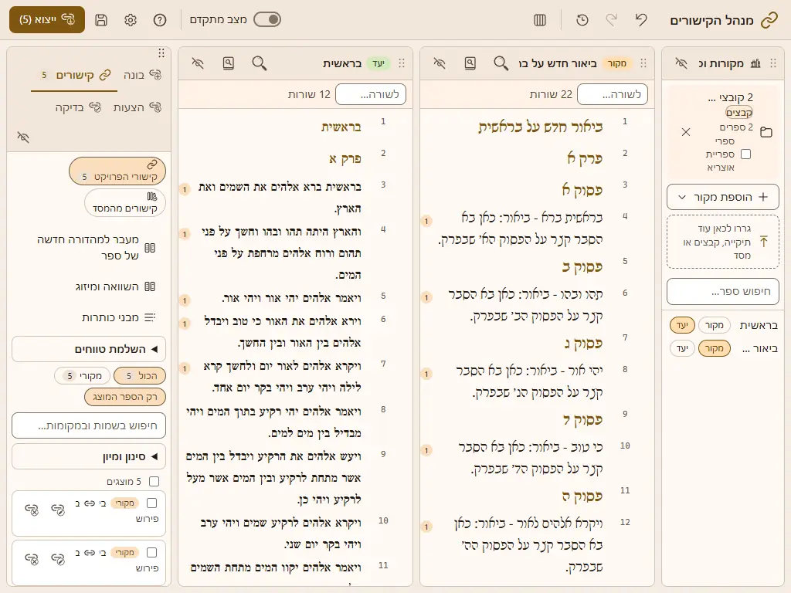
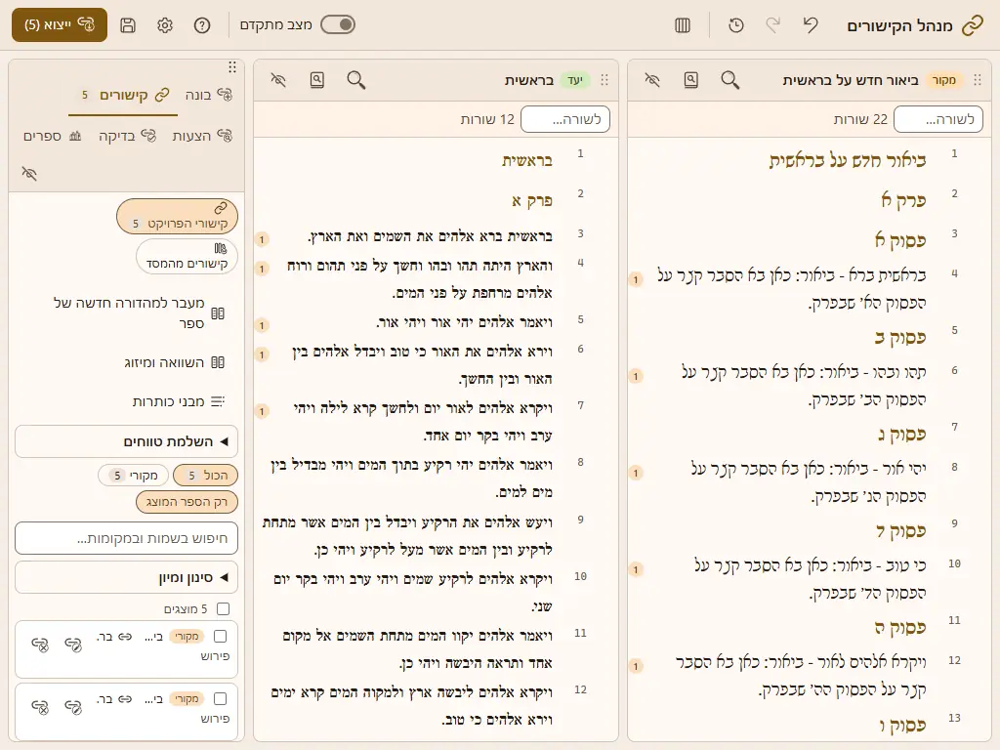
- התבנית כבר קיימת ונבדקה; רק מחילים אותה גם כשהחלון קטן מ־1200 תוך כדי עבודה
- הספרים עוברים ללשונית "ספרים" בחלונית
- משנה פריסה בלי שהמשתמש ביקש — לכן רק אם לא בחר תבנית בעצמו בהפעלה הזו
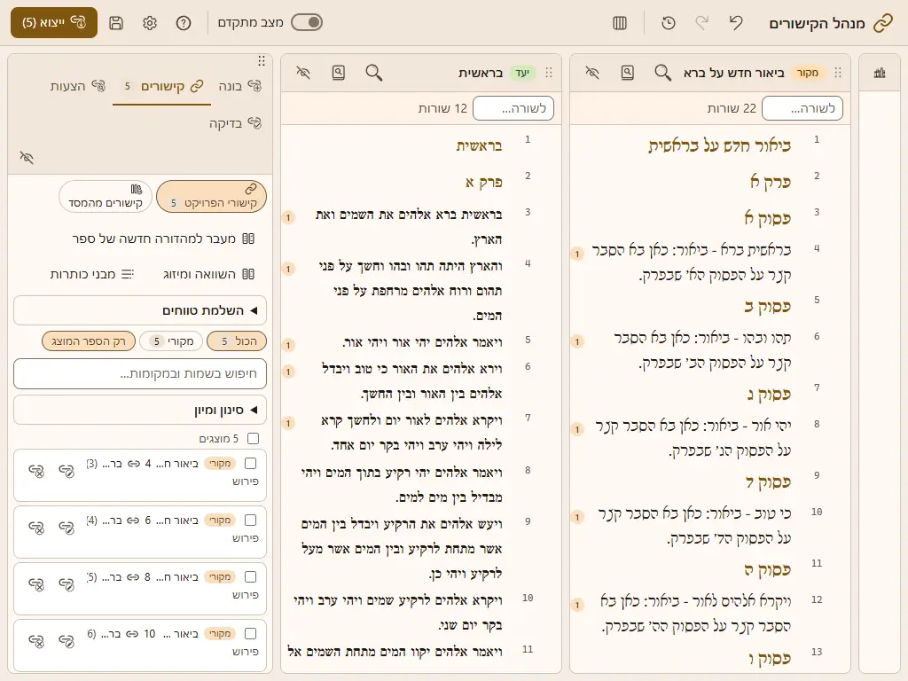
- נשארים ארבעה טורים (ADR 0005 §2); החלונית מקבלת 300px
- לחיצה על סמל פותחת את רשימת הספרים מעל הקורא
- רכיב חדש (פס ופאנל צף) — יותר עבודה מחלופה א
המלצה: א (זול, עקבי עם מה שקורה בפתיחה), ואפשר ב בהמשך גם למסכים גדולים.
{{icon:oz_link_search}} 2. ההצעות אחרי קישור מרבי
אחרי קישור מרבי, לפני ההצעה הראשונה יש ארבעה סיכומים: שורת הכותרת (2,000 הצעות · 2,000 ממתינות), הערה על איחוד ("4,000 הצעות מ־800 שלבים אוחדו…"), כרטיס העבודה (הסתיים · לפי שיטה · כפתורים) ודוח הקישור המרבי הפתוח (12 מונים, לפי ספר, לפי שיטה). ב־1440 טבלת ההצעות מתחילה מתחת לקו המסך; ב־820 החלונית התחתונה מלאה בסיכומים.
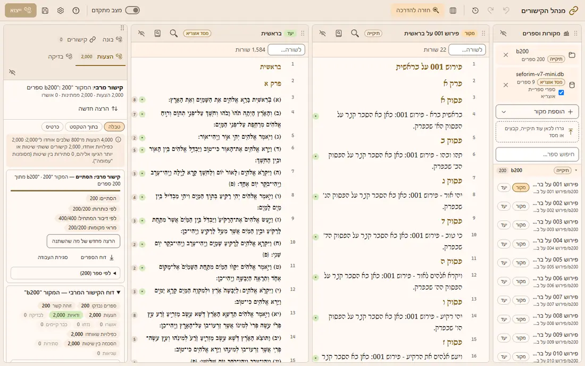
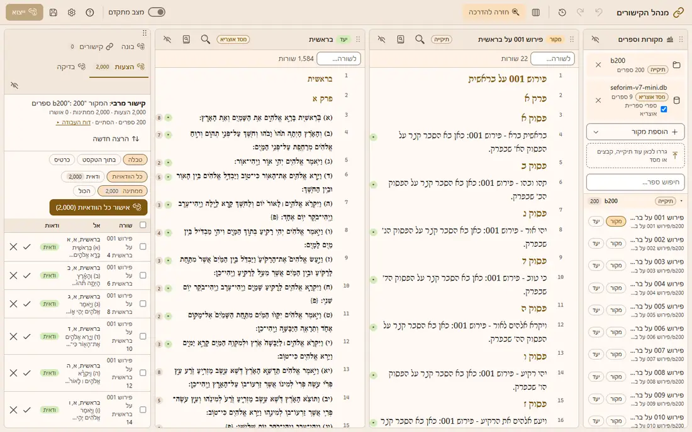
- הטבלה עולה לראש החלונית; המספרים החשובים נשארים בכותרת
- כרטיס העבודה חוזר לבד כשיש מה להמשיך (מושהה, נכשלו)
- הדוח המפורט רחוק בלחיצה אחת
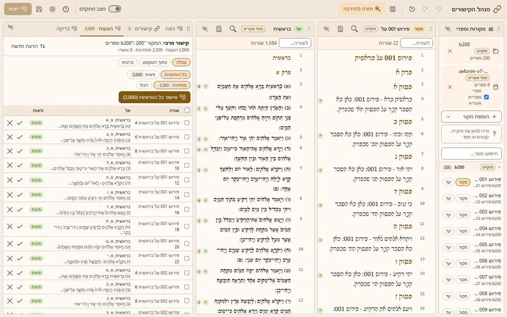
- עמודות "אל" ו"ודאות" בלי שבירת שורות; פחות גלילה
- הקוראים מצטמצמים בזמן הסקירה; צריך כלל ברור מתי חוזרים
המלצה: א. ב — רק אם בבדיקה עם משתמשים יתברר שסוקרים הרבה בטבלה ולא בכרטיס.
{{icon:oz_links}} 3. שורות טבלת הקישורים
כל קישור הוא שורה אחת של 60px. הוחל: השמות כבר לא נכתבים זה על זה, ומספר השורה לא נחתך (היה "ביאור חדש על בראשיתאאשית4…"). אבל בחלונית של 300px עדיין נשאר "ביאור חד… 4 ⇔ בר… (3)", ושורת "פירוש" שמתחת כמעט ריקה.

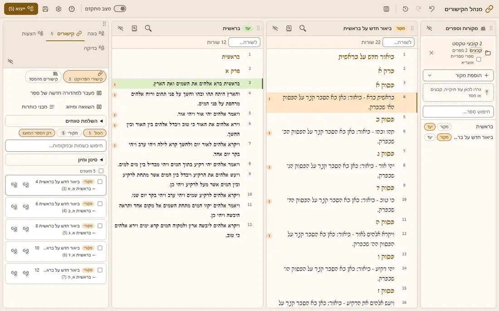
- שני השמות כמעט מלאים באותו גובה שורה (64px)
- הסוג והשיטה עוברים לרמז (title) או לסינון
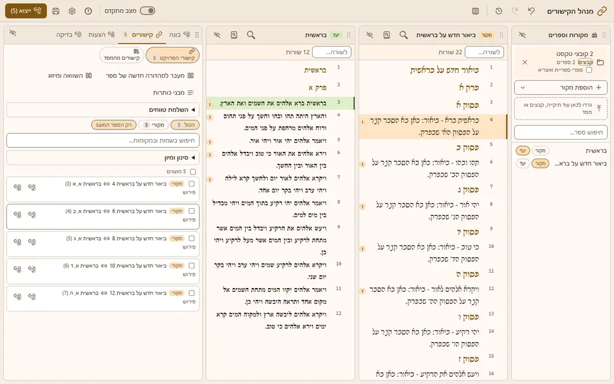
- "ביאור חדש על בראשית 4 ⇔ בראשית א, א (3)" בשורה אחת
- אותו מחיר כמו 2ב: הקוראים צרים יותר בזמן עבודה על הטבלה
המלצה: א.
{{icon:oz_search_in_folder}} 4. ההרצה בזרימה המודרכת
בזמן קישור מרבי בזרימה המודרכת יש שלושה פסי התקדמות לאותה עבודה: בסרגל העליון (עם "ביטול"), בכרטיס השלב ("ספר 17 מתוך 200") ובכרטיס העבודה שבתוכו ("מתוך 200 ספרים", עם "השהיה" ו"עצירה"). "ביטול" ו"עצירה" עושים אותו דבר בשתי מילים.
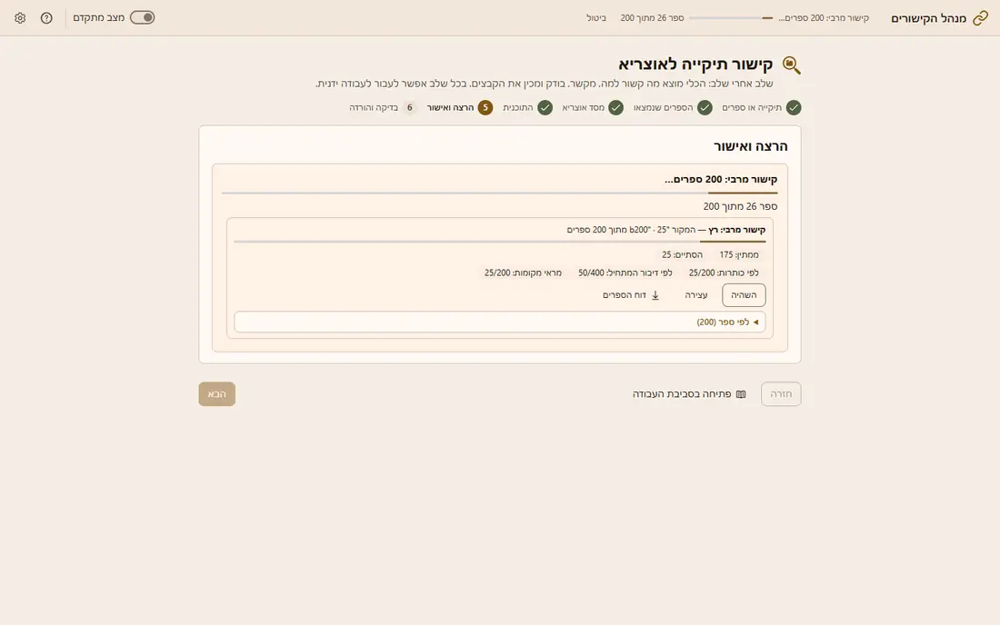

- פס אחד, מילה אחת לעצירה ("עצירה"), וההשהיה במקומה
- הזמן הנותר (שיש היום בכרטיס השלב) צריך לעבור לכרטיס העבודה
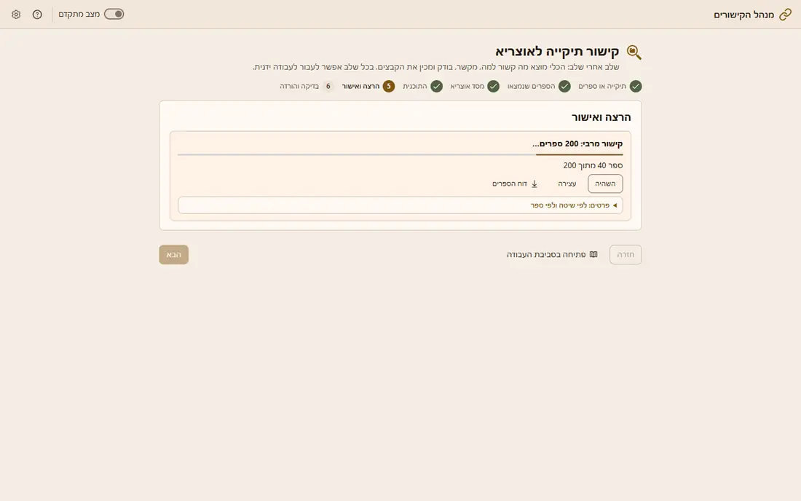
- הכי פשוט למי שלא קרא את המדריך
- מי שרוצה לראות התקדמות לפי שיטה צריך לפתוח "פרטים"
המלצה: ב בזרימה המודרכת; בסביבת העבודה כרטיס העבודה נשאר כמו שהוא.
{{icon:oz_link}} 5. איזו שורה במקור הולכת עם איזו שורה ביעד
לחיצה על קישור בטבלה (או בבדיקה, או ב"לא ייוצאו, ולמה") גוללת לשני צדדיו ומהבהבת שנייה אחת — ואז שום דבר על המסך לא אומר מה הולך עם מה. הוחל: שני הצדדים נשארים מסומנים בצבעי המקור והיעד, כמו בהצעה. מה שעוד חסר: מהטקסט עצמו אין דרך להגיע מהשורה לקישורים שלה — המספרים שליד השורה ("1", "2") לא לחיצים.

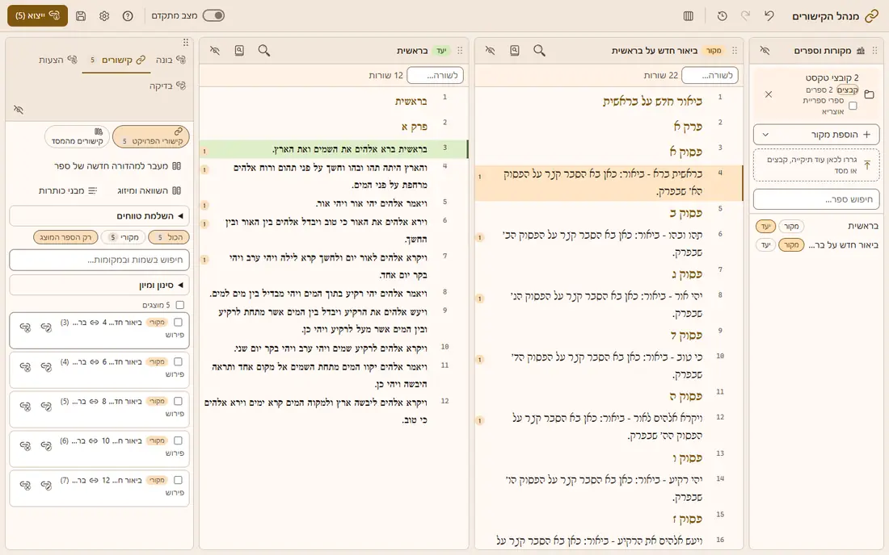
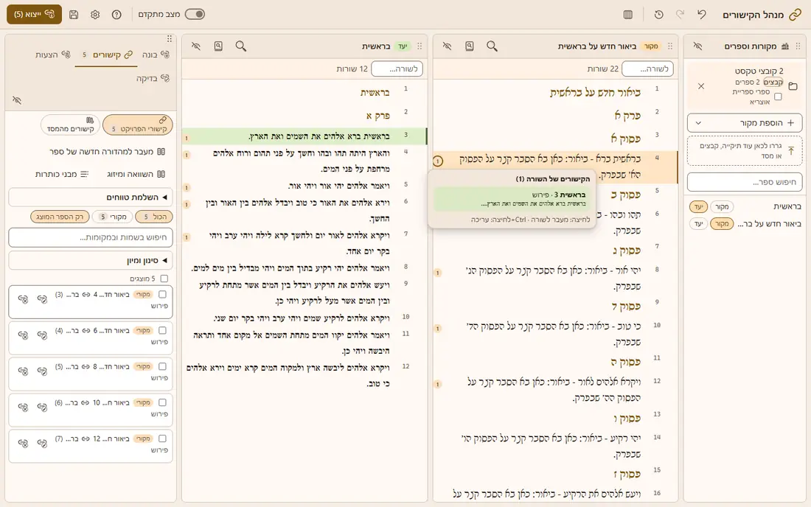
- מהטקסט לקישור בלחיצה אחת, עם תחילת שורת היעד
- לחיצה על קישור ברשימה = מעבר ושני הצדדים מסומנים
- רכיב צף חדש; צריך גישה מהמקלדת

- רואים את הקשר בלי לקרוא מספרים
- הקו נשבר כשאחד הקוראים גולל או כשהפאנלים בסדר אחר (תבניות, גרירה)
המלצה: א (ב יפה, אבל שביר מול פריסה גמישה).
{{icon:fl_warning}} 6. ההודעות
עד שלוש הודעות בפינה, 440px, עד 6 שורות כל אחת. אחרי פתיחת תיקיית קישורים וספרים הן מכסות את רשימת הספרים ואת תחתית הקורא; שגיאה נשארת עד שסוגרים. בזרימה המודרכת הן כיסו את "חזרה" — הוחל: שם הן עולות מעל הכפתורים.
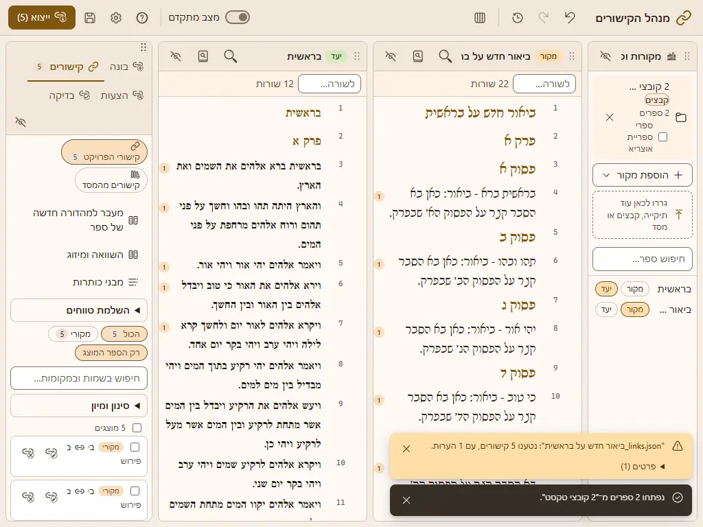
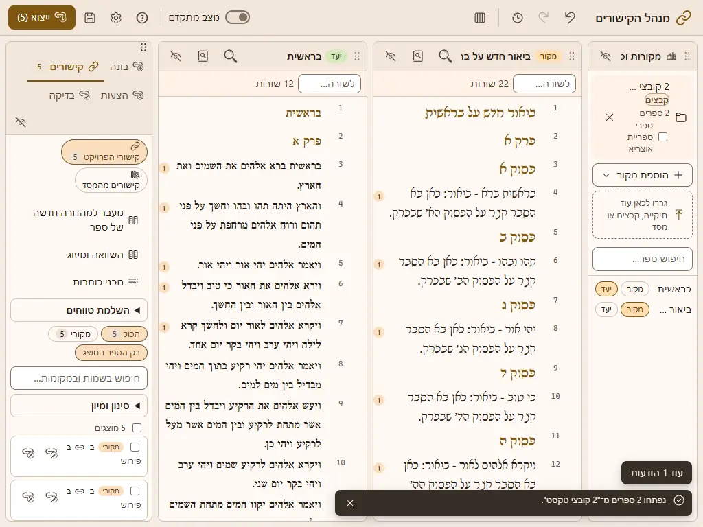
- מכסה גובה של שורה אחת
- הודעה ארוכה נקראת רק בפתיחה (לחיצה או ריחוף)

- שום דבר לא מכסה את הטקסט בזמן עבודה
- "נפתחו 200 ספרים" לא נראה מעצמו — אישור שמשתמשים מצפים לו
המלצה: א.
{{icon:fl_settings}} 7. הסרגל העליון בחלון של 820 (טאבלט לאורך)
ב־820 הסרגל נכנס בשורה אחת — עד שמופיע "חזרה להדרכה" (או משימה רצה): אז "ייצוא" יורד לשורה שנייה לבד, והסרגל תופס 100px.
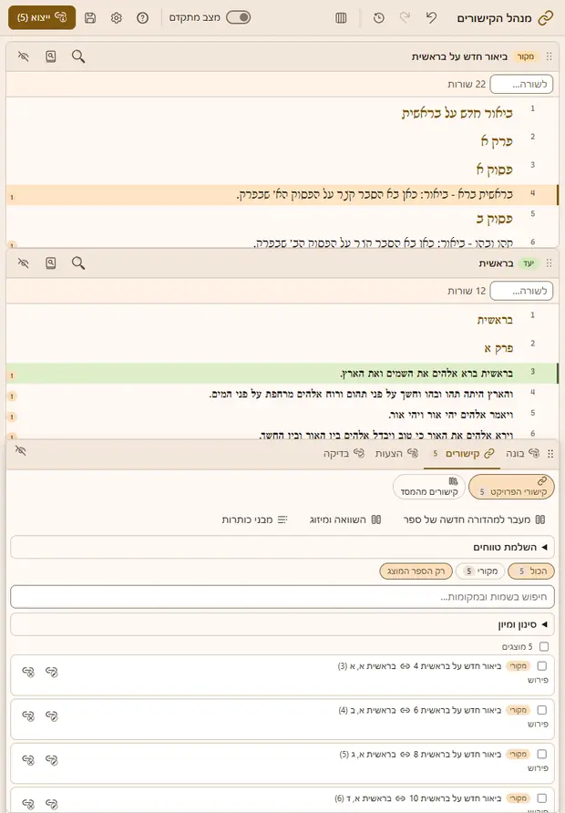
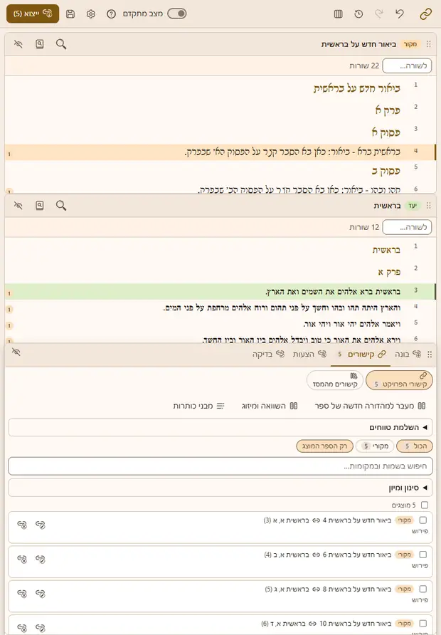
- שינוי של שורת CSS; כבר כך מתחת ל־600px
- פחות מקום מפנה מ־ב
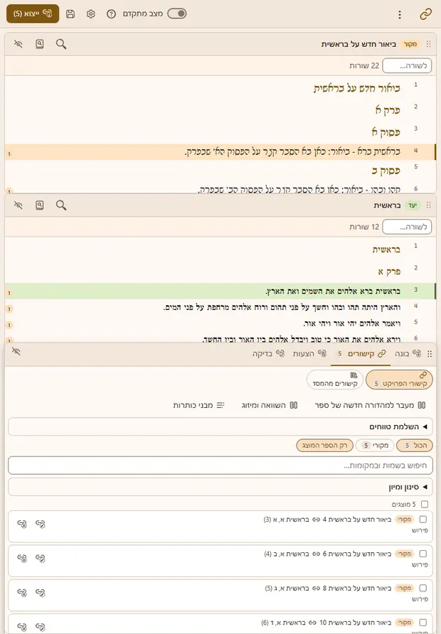
- מקום ל"חזרה להדרכה" ולמשימה הרצה
- ביטול בשתי לחיצות (Ctrl+Z נשאר)
המלצה: א.